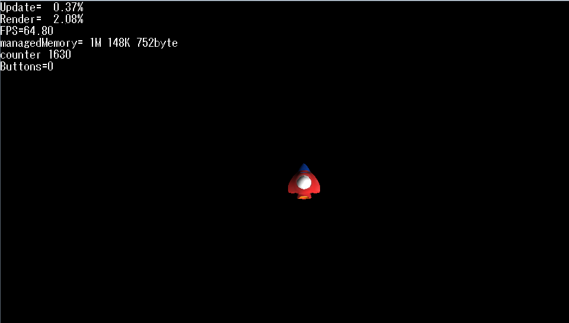
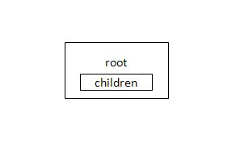
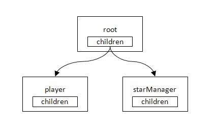
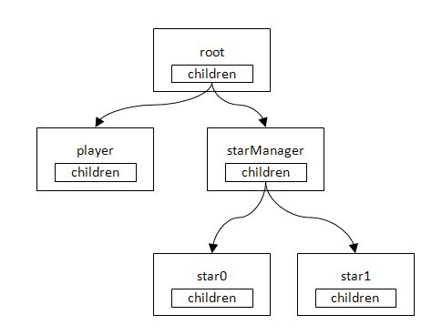

この文書ではオブジェクト指向的な手法を使ってプログラミングする方法を説明します。
Contents
「プログラムの構造」の章では、一般的なPSMプログラムの構造を説明しました。 PSMでプログラムを組む場合、この構造はほぼ同じになります。
そこでプログラムの構造(フレームワーク)を基底クラスとして作成し、継承して使いまわせるようにしてみましょう。
Sample/Tutorial/Sample04_01を開き、TutoLibプロジェクトのGameFramework.csを見てください。
Sample/Tutorial/TutoLib/GameFramework.cs
public class GameFramework : IDisposable { ... public void Run(string[] args) { Initialize(); while (loop) { time[0] = (int)stopwatch.ElapsedTicks;// start SystemEvents.CheckEvents(); Update(); time[1] = (int)stopwatch.ElapsedTicks; Render(); } Terminate(); } ... }GameFrameworkクラスを定義しています。 前のソースコードでMain()に入っていたUpdate()やRender()をRun()の中で処理しています。 このGameFrameworkクラスのインスタンスを作成し、Run()メソッドを呼び出し、ループに入る、という仕組みになります。
time[0] = (int)stopwatch.ElapsedTicksとtime[1] = (int)stopwatch.ElapsedTicksの行は処理時間計測のための処理です。処理時間の計測は、どのプログラムでも必要になるものなので、使いまわせるようにしています。これは後で説明します。
このGameFrameworkクラスを継承してGameFrameworkSampleクラスを実装します。 以下が継承している部分です。
Sample/Tutorial/Sample04_01/GameFrameworkSample.cs
public class GameFrameworkSample: GameFramework { Int32 counter=0; public ImageRect rectScreen; SimpleSprite spritePlayer; public override void Initialize() { base.Initialize(); rectScreen = graphics.Screen.Rectangle; Texture2D texturePlayer = new Texture2D("/Application/resources/Player.png", false); spritePlayer = new SimpleSprite(graphics, texturePlayer); spritePlayer.Position.X = rectScreen.Width/2.0f; spritePlayer.Position.Y = rectScreen.Height/2.0f; spritePlayer.Position.Z = 0.0f; } public override void Update() { base.Update(); #if DEBUG debugString.WriteLine("counter "+counter); debugString.WriteLine("Buttons="+PadData.Buttons); #endif int speed = 4; if((PadData.Buttons & GamePadButtons.Left) != 0) { spritePlayer.Position.X -= speed; } if((PadData.Buttons & GamePadButtons.Right) != 0) { spritePlayer.Position.X += speed; } if((PadData.Buttons & GamePadButtons.Up) != 0) { spritePlayer.Position.Y -= speed; } if((PadData.Buttons & GamePadButtons.Down) != 0) { spritePlayer.Position.Y += speed; } ++counter; } public override void Render() { graphics.Clear(); graphics.Enable(EnableMode.DepthTest); spritePlayer.Render(); base.Render(); } }プレイヤーの操作など、このプログラムで独自の部分を上書き（override:オーバーライド)して実装しています。
base.Initialize()、base.Update()、base.Render()は基底クラスGameFrameworkで定義した処理を呼び出しています。
気をつける必要があるのは、base.Initialize()は、継承したInitialize()の冒頭、base.Update()は、継承したUpdate()の冒頭、base.Render()は、継承したRender()の最後で呼ぶことです。
base.Update()、base.Render()を実装し忘れると、基底クラスで行っている処理が行われず、うまく動きませんので注意してください。
作成したGameFrameworkSampleクラスは以下のようにして使います。
Sample/Tutorial/Sample04_01/AppMain.cs
public class AppMain { public static void Main(string[] args) { using( GameFrameworkSample game = new GameFrameworkSample()) { game.Run(args); } } }GameFrameworkSampleのインスタンスを生成し、Run()の呼び出しを行うと、前と同じようにプログラムが進行します。
プログラムを実行してみましょう。
プレイヤーは以前と同じように動きます。
今度は左上に数字が出ていますね。
UpdateとRenderは1フレームの処理時間に占める割合を表しています。
FPSは1秒間で画面が何回描きかえられているかを表しています。
managedMemoryはPSMアプリが使用しているマネージドメモリの量を表しています。
次はこれについて説明します。
ゲームアプリケーションでは、「どの場所でどれくらいの処理時間がかかっているか」を把握することが、とても重要です。 コンソールアプリケーションなどでは処理時間が10ミリ秒から50ミリ秒になってもそれほど問題にはなりませんが、ゲームでは画面の切り替えに間に合わないと処理落ちが発生し、見た目に顕著な問題が現れます。
Sample04_01を実行すると、画面左上でUpdate、Renderの文字列の横に数字が表示されるようになります。 これは画面の切り替わるタイミングである16ミリ/秒を100%とし、それぞれの処理にどれだけ処理時間がかかっているかを表したものです。
ここの数字は実行するマシンの性能によって変化しますが、私のPCではだいたいUpdate= 0.50%、Render= 25.00%を推移しています。
Updateはほとんど処理時間がかかっていませんね。Update()内は簡単な条件判定と足し算だけなので、処理が軽い、といえるでしょう。
Renderは25%なので結構処理時間がかかっていますね。
※ 描画の仕組みはデバイスによって異なるため、Renderの処理時間はあくまで目安となります。
Update+Renderの処理時間が100%を越えてしまうと、画面の切り替えに間に合わなくなり、処理落ちすることになります。
処理時間を計測している箇所はGameFramework.csにあります。その部分を見てみましょう。
Sample/Tutorial/TutoLib/GameFramework.cs
virtual public void Initialize() { Console.WriteLine("Initialize()"); stopwatch = new Stopwatch(); stopwatch.Start();Stopwatchクラスは経過時間を計測するクラスです。stopwatch.Start()で計測を開始します。
while (loop) { time[0] = (int)stopwatch.ElapsedTicks;// start SystemEvents.CheckEvents(); Update(); time[1] = (int)stopwatch.ElapsedTicks; Render(); }stopwatch.ElapsedTicksは経過時間です。
フレームの最初の時間がほしいのでループの冒頭でtime[0] = (int)stopwatch.ElapsedTicksのようにして時間を保持しておきます。
次はUpdate()が終了した場所で、time[1] = (int)stopwatch.ElapsedTicks;のようにして経過時間を保持しておきます。time[1]-time[0]の差が経過時間となります。
次も同じようにtime[2] = (int)stopwatch.ElapsedTicks;でRender()終了後の経過時間を保持しています。
virtual public void Render() { #if DEBUG if(drawDebugString==true) debugString.Render(); #endif time[2] = (int)stopwatch.ElapsedTicks; graphics.SwapBuffers(); ... preTime=(int[])time.Clone(); }preTime=(int[])time.Clone();は計測した時間を配列にコピーする処理です。
あとは各経過時間を計算して、DebugStringで表示します。DebugStringはスクリーン上にアスキー文字を表示するクラスです。Console.Write()のように引数に文字列を指定して使用します。
void CalculateProcessTime() { float fps = 60.0f; float ticksPerFrame = Stopwatch.Frequency / fps; timePercent[0]=(preTime[1]-preTime[0])/ticksPerFrame; timePercent[1]=(preTime[2]-preTime[1])/ticksPerFrame; debugString.WriteLine(string.Format("Update={0,6:N}%", timePercent[0] * 100)); debugString.WriteLine(string.Format("Render={0,6:N}%", timePercent[1] * 100)); debugString.WriteLine(string.Format("FPS={0,5:N}", fps)); ... }現在計測中のフレームは表示できないので、preTimeに保持しておいた、ひとつ前のフレームの計測時間を表示しています。
処理時間のかかっている箇所をより詳しく知りたい方は、time[]の配列のサイズを増やしてから、time[*] = (int)stopwatch.ElapsedTicks;を増やしてみるとよいでしょう。
デバッグフォントのON/OFFを切り替えたい場合は、Lボタンを押しながらRボタンを、キーボートならQキーを押しながらEキーを押してください。
ゲームに必要なキャラクタをどんどん実装していきましょう。
- 星。
- 自分が発射する弾。
- 敵。
- 弾が命中したときに出す爆発。
ところで、上のキャラクタをバラバラに実装していくと、どんどんプログラムが煩雑になってしまいそうです。 種類が５つ程度ならなんとかなりそうですが、種類が大量に増えるとプログラムの管理で収拾がつかなくなるでしょう。
ゲーム上で使うキャラクタの共通要素を取り出して、それを使いまわすと管理がしやすくなります。
共通の要素をもつ基底クラスを作成し、プレイヤーや敵・星・弾をそこから派生させてみましょう。
Sample/Tutorial/Sample04_02を開いてください。
ここではアクターモデルと呼ばれる手法を用います。 プレイヤーや星・弾のひとつひとつをアクター（役者）にみたて、彼らに命令を与えるようにしてプログラムを実行します。
アクターの基底クラスを定義します。
Sample/Tutorial/TutoLib/Actor.cs
public class Actor { public string Name { get; set; } public enum ActorStatus { Action, UpdateOnly, RenderOnly, Rest, NoUse, Dead, } ActorStatus status; public ActorStatus Status { get { return status; } set { status = value; StatusNextFrame = value; } } public ActorStatus StatusNextFrame; protected Int32 level=0; protected List<Actor> children = new List<Actor>(); public List<Actor> Children { get { return children;} } public Actor() { this.Name = "no_name"; this.Status = ActorStatus.Action; } public Actor(string name) { this.Name = name; this.Status = ActorStatus.Action; } virtual public void Update() { foreach( Actor actorChild in children) { if(actorChild.Status == ActorStatus.Action || actorChild.Status == ActorStatus.UpdateOnly) actorChild.Update(); } } virtual public void Render() { foreach( Actor actorChild in children) { actorChild.Render(); } } virtual public void AddChild(Actor actor) { children.Add(actor); actor.level = this.level+1; }各メソッドをvirtualで仮想関数として実装しているところがミソです。 継承したクラスで仮想関数を上書きすると、上書きしたメソッドを呼んでくれます。
アクターにはAddChild()で子のアクターを所属させることができます。 AddChild()は次のようなイメージです。

- 最初にルート（おおもと）になるアクターを作ります。
- root.AddChild(player)でplayerを所属させます。


- root.AddChild(starManager)で星のひとつひとつを管理するstarManagerを所属させます。

- 今度はstarManagerを親にして、starManager.AddChild(star0)でstar0を、starManager.AddChild(star1)でstar1を所属させます。
アクターはツリー上の構造にしたほうが、単純な線形で繋げていくより何かと都合がよくなります。
そしてMain()内のUpdate()とRender()内にroot.Update()、root.Render()と記述しておくと、あとはツリーに所属している全てのアクターをたどって処理を実行してくれます。
アクターはフレームワークと常に連絡をとることになるので、フレームワークへの参照を保持しておけるようにしましょう。
Actorクラスを継承してGameActorクラスを定義します。
Sample/Tutorial/Sample04_02/GameActor.cs
public class GameActor : Actor { protected GameFrameworkSample gs; protected SimpleSprite sprite; public GameActor(GameFrameworkSample gs, string name) : base(name) { this.gs = gs; } public override void Render () { if(sprite!=null) sprite.Render(); base.Render (); } }クラスのメンバーにGameFrameworkSample gsとSimpleSprite spriteを追加しています。 ゲームに使うキャラクターのアクターはこのGameActorクラスから派生させるようにします。
GameActorクラスを継承してPlayerクラスを定義します。
Sample/Tutorial/Sample04_02/Player.cs
public class Player : GameActor { public Player(GameFrameworkSample gs, string name, Texture2D textrue) : base(gs, name) { sprite = new SimpleSprite(gs.Graphics, textrue); sprite.Position.X=gs.rectScreen.Width/2; sprite.Position.Y=gs.rectScreen.Height/2; sprite.Center.X = 0.5f; sprite.Center.Y = 0.5f; sprite.Position.Z=0.5f; } public override void Update () { #if DEBUG gs.debugString.WriteLine(string.Format("Position=({0},{1})\n", sprite.Position.X, sprite.Position.Y)); #endif int speed = 4; if((gs.PadData.Buttons & GamePadButtons.Left) != 0) { sprite.Position.X -= speed; if(sprite.Position.X < sprite.Width/2.0f) sprite.Position.X=sprite.Width/2.0f; } if((gs.PadData.Buttons & GamePadButtons.Right) != 0) { sprite.Position.X += speed; if(sprite.Position.X> gs.rectScreen.Width - sprite.Width/2.0f) sprite.Position.X=gs.rectScreen.Width - sprite.Width/2.0f; } if((gs.PadData.Buttons & GamePadButtons.Up) != 0) { sprite.Position.Y -= speed; if(sprite.Position.Y < sprite.Height/2.0f) sprite.Position.Y =sprite.Height/2.0f; } if((gs.PadData.Buttons & GamePadButtons.Down) != 0) { sprite.Position.Y += speed; if(sprite.Position.Y > gs.rectScreen.Height - sprite.Height/2.0f) sprite.Position.Y=gs.rectScreen.Height - sprite.Height/2.0f; } base.Update(); } }コントローラからの入力は以前と同じですが、プレイヤーが画面の外に出ないようにしています。 注意したいのはoverrideでメソッドを上書きしたら、base.Update()とbase.Render()を忘れずに呼び出すことです。 呼び出すのを忘れると、自分の子が処理されなくなってしまいます。
#if DEBUG～#endifの箇所ではプレイヤーの座標を表示しています。
ビルドの設定がDebugのときのみ、この箇所が有効になります。 ビルドの設定をReleaseにするとこの箇所は消えてくれるので、開発中のみ表示したいデバッグ出力があれば、このように書いておくと便利です。
次にStarクラスを定義しましょう。やり方はPlayerクラスと同じです。
Sample/Tutorial/Sample04_02/Star.cs
public class Star : GameActor { float speed; public Star(GameFrameworkSample gs, string name, Texture2D textrue, Vector3 position, Vector4 color, float speed) : base(gs, name) { sprite = new SimpleSprite(gs.Graphics, textrue); sprite.Position = position; sprite.SetColor( color); this.speed = speed; } public override void Update() { sprite.Position.Y += speed; if (sprite.Position.Y > gs.rectScreen.Height ) { sprite.Position.Y = 0.0f; sprite.Position.X = (int)(gs.rectScreen.Width * gs.rand.NextDouble()); } base.Update(); } }Update()で毎フレームごとspeedを加算して座標を更新しています。これで星が上から下に向かって移動していきます。 画面の外に出たらY座標を0.0fにし、かつX座標をランダムで指定して、再び画面の上から出すようにします。
あとは定義したクラスのインスタンスを作成し、root.AddChild()でアクターのツリーに登録しましょう。 ソースコードは以下のようになります。
Sample/Tutorial/Sample04_02/GameFrameworkSample.cs
public override void Initialize() { base.Initialize(); rectScreen = graphics.GetViewport(); root = new Actor("root"); Texture2D texturePlayer = new Texture2D("/Application/resources/Player.png", false); root.AddChild(new Player(this, "Player", texturePlayer)); Texture2D textureStar = new Texture2D("/Application/resources/Star.png", false); Actor starManager = new Actor("starManager"); ... Star star; for( int i=0; i< 20; ++i) { star= new Star(this, "star"+i, textureStar, new Vector3((float)(rectScreen.Width * rand.NextDouble()),(float)(rectScreen.Height* rand.NextDouble()),0.7f), starColors[ i % starColors.Length], (float)(1.0f * (rand.NextDouble() + 0.5f))); starManager.AddChild(star); } root.AddChild(starManager); }これでアクターのツリーは下の図のような状態になります。
あとはフレームワーク側でroot.Update()とroot.Render()を呼び出せば、登録されている全てのアクターを処理してくれます。
Sample/Tutorial/Sample04_02/GameFrameworkSample.cs
public override void Update() { base.Update(); #if DEBUG debugString.WriteLine("counter "+counter); debugString.WriteLine("Buttons="+PadData.Buttons); #endif root.Update(); ++counter; } public override void Render() { graphics.Clear(); graphics.Enable(EnableMode.DepthTest); root.Render(); base.Render(); }ソースコードが以前に比べて、すっきりしましたね。ソースコードを簡潔に書くことは、大きなプログラムを作っていく上でとても重要なことです。
ビルドして実行してみましょう。 画面上に星が現れました。

実行してみると、
- プレイヤーはPlayerクラスで定義した、コントローラの入力を座標に反映させるUpdate()
- 星はStarクラスで定義した、星を上から下に移動させるUpdate()
が呼び出されていることが確認できます。 このような動作のことをオブジェクト指向では「多態性」と呼びます。